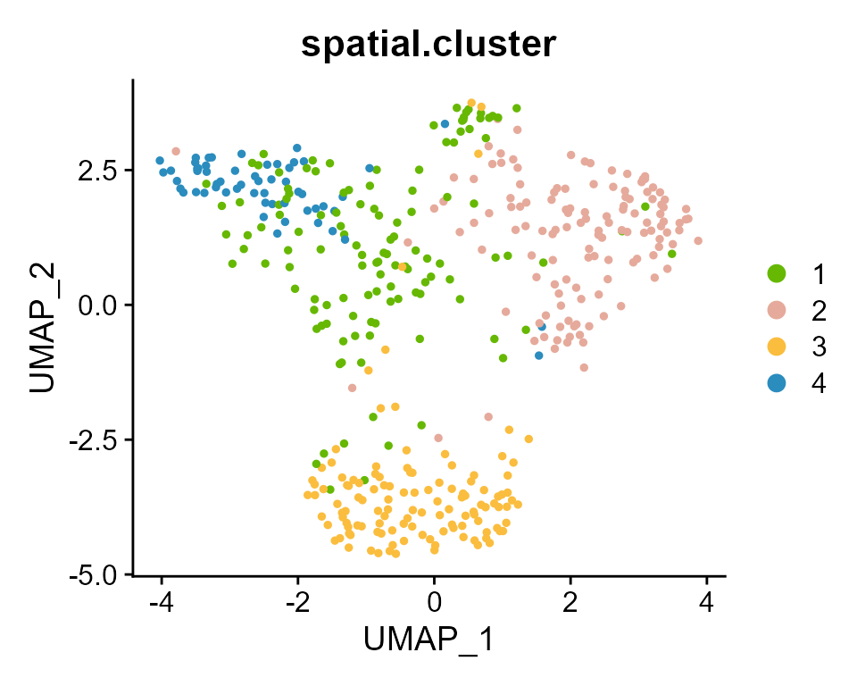
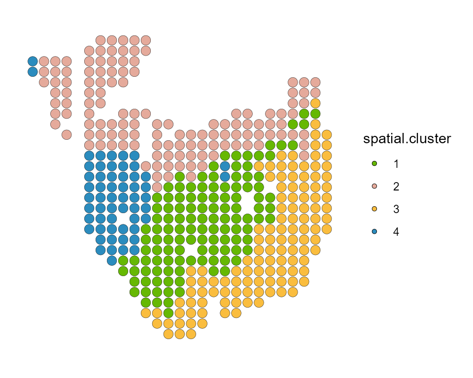
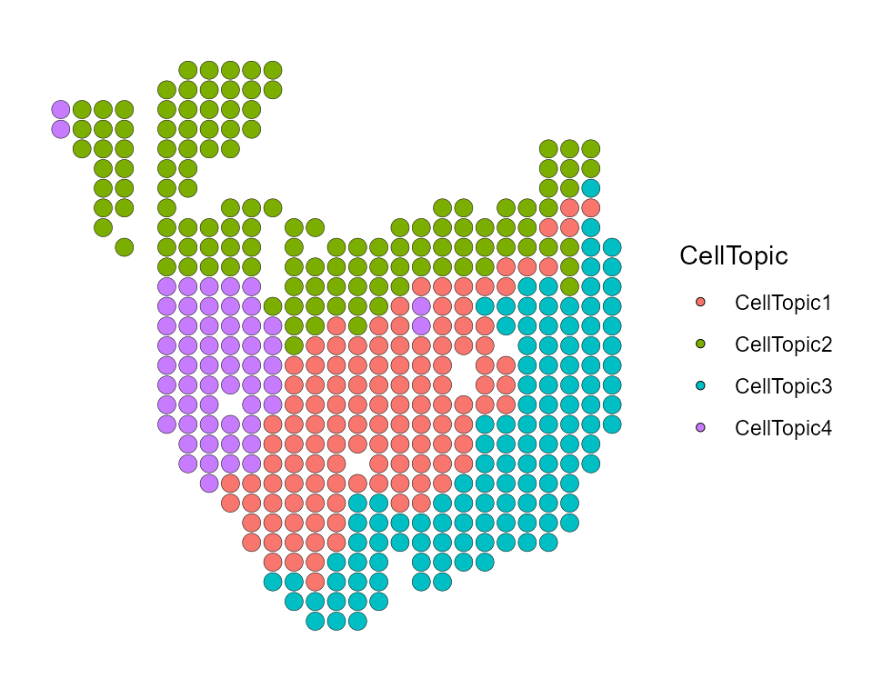
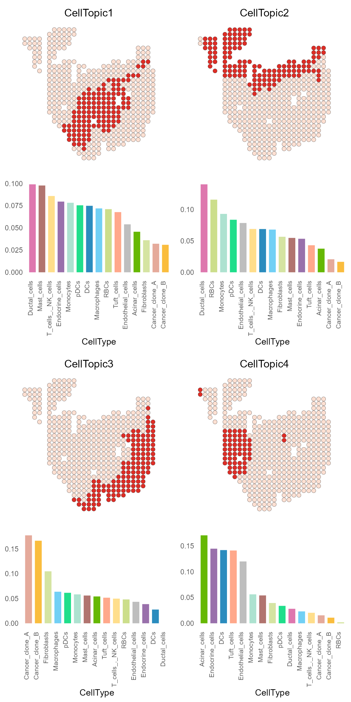
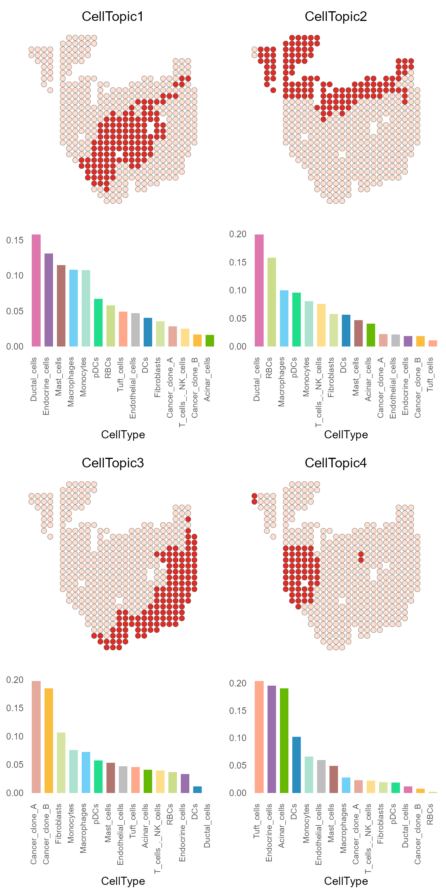

library(SpaTopic)
Loading required package: Seurat
Loading required package: SeuratObject
Loading required package: sp
Attaching package: 'SeuratObject'
The following object is masked from 'package:base':
intersect
library(ggplot2)
my_colors <- c("#66b803", "#E5AA9B", "#FABD3E", "#2B8CBE", "#DE77AE", "#9970AB", "gray", "#D5E4A2", "#71D0F5", "#B1746F", "#ADE2D0", "#20DE8BFF", "#CCDE8BFF", "#FFDE8BFF", "#FFA88BFF", "#FF6A8BFF")Load data
SpaTopic requires two inputs:
spot_celltype: The result of the deconvolution of single-cell and spatial transcriptome data, or a matrix with rows as spots and columns as cell types.*spot_clusters: A dataframe with spot domain information.*
And they should be like
data("spot_celltype")
data("spot_clusters")
head(spot_celltype)
Acinar_cells Ductal_cells Cancer_clone_A Cancer_clone_B DCs
10x10 5.838572e-02 0.2349066 1.365076e-03 3.892868e-04 0.165860789
10x13 4.807943e-05 0.9984677 1.654640e-06 9.032885e-06 0.001244634
10x14 4.701190e-02 0.8373601 4.846860e-03 9.009235e-04 0.003541947
10x15 5.047613e-02 0.8020465 1.911570e-04 3.325224e-02 0.084113110
10x16 4.694120e-03 0.9718078 1.719378e-06 6.266388e-04 0.007665514
10x17 6.850619e-02 0.7737652 1.034929e-02 5.242836e-02 0.030090839
Tuft_cells pDCs Endocrine_cells Endothelial_cells Macrophages
10x10 1.149557e-02 5.750904e-05 3.794494e-03 1.554314e-01 7.575614e-02
10x13 1.411944e-04 2.179189e-08 2.791803e-08 2.522234e-08 4.952721e-05
10x14 2.430843e-05 6.745099e-05 7.014669e-08 9.208190e-03 3.539390e-02
10x15 3.087975e-07 2.387285e-04 1.660241e-07 3.787078e-04 1.868701e-02
10x16 2.859347e-07 1.835252e-04 9.321908e-09 1.535896e-04 2.258778e-05
10x17 7.639672e-04 1.963630e-04 1.888457e-04 2.610257e-03 1.254141e-03
Mast_cells T_cells_._NK_cells Monocytes RBCs Fibroblasts
10x10 1.335059e-07 1.419896e-05 6.324585e-05 6.935704e-08 2.924798e-01
10x13 2.560977e-08 8.100230e-10 2.999011e-05 4.812122e-06 3.255235e-06
10x14 7.319528e-06 2.780869e-06 8.047062e-04 7.357054e-06 6.082224e-02
10x15 9.115675e-07 2.629728e-06 4.568320e-04 2.846073e-05 1.012715e-02
10x16 6.924793e-07 2.044994e-05 1.654387e-06 1.444002e-09 1.482138e-02
10x17 4.102771e-06 1.894866e-04 6.179414e-04 3.425166e-06 5.903159e-02head(spot_clusters)
row col sizeFactor cluster.init spatial.cluster
10x10 10 10 4.7761108 1 2
10x13 10 13 1.0052199 2 2
10x14 10 14 0.8106812 2 2
10x15 10 15 0.4987377 2 2
10x16 10 16 0.4346143 2 2
10x17 10 17 0.7446991 2 2*The data used here is from CARD
(spot_celltype) and BayesSpace
(spot_clusters).
About data
The corresponding Seurat object data can also be obtained from GEO.
(Data used here is processed by SCTransform) The
spot_celltype and spot_clusters is based on
it.
load("vignette_data/PDAC_obj.rda")
PDAC_obj <- AddMetaData(PDAC_obj, spot_clusters["spatial.cluster"])
DimPlot(PDAC_obj, group.by = 'spatial.cluster', reduction = "umap",cols = my_colors)
SpatialDimPlot(PDAC_obj, label = FALSE, group.by = "spatial.cluster", pt.size.factor = 8) + scale_fill_manual(values = my_colors) 
Simply usage
Enter the deconvolution result spot_celltype and the
grouping information of the spot spot_clusters to get an
result_list :
CellTopicis a dataframe which can be add to a Seurat object.domain_topicis a dataframe, row is CellTopics and col is domains.celltype_topicis a dataframe, row is cell types and col is CellTopics.Cell_topicis a vector of which topic can be chosen in each CellTopic.
For subsequent analyses, CellTopic and
celltype_topic are mainly used.
result_list <- CellTopic(
spot_celltype,
spot_clusters,
cluster = "spatial.cluster",
num_topics = 13
)Plot
You can add the results of CellTopic to meta.data of
Seurat object through AddMetaData of Seurat, and display
the spatial position of all CellTopics through
SpatialDimPlot of Seurat.
PDAC_obj <- AddMetaData(PDAC_obj, result_list[["CellTopic"]])
SpatialDimPlot(PDAC_obj, group.by = "CellTopic",pt.size.factor = 8)
And CellTopic_plot can be used to display the spatial
location and cell type of one or more CellTopics at the same time.
Please use the Seurat object with CellTopic added as meta.data and
the celltype_topic dataframe in the result list of
FindCellTopic (or CellTopic) function as
input.
CellTopic_plot(PDAC_obj,
celltype_topic = result_list[["celltype_topic"]],
cols.highlight = c("#DE2D26", "#FEE0D2"),
cols.celltype = my_colors,
pt.size.factor = 8)
Optional parameters
result_list <- CellTopic(
spot_celltype,
spot_clusters,
cluster = "spatial.cluster",
num_topics = 13,
percent = 0.7
)We recommend that the value of the num_topics is
generally slightly larger than the group number of spots.
The larger the percent, the more dependent the results
of deconvolution. We recommend using a value of 0.5-0.9.
Another strategy
If you want to focus less on percentages and more on the information
carried by a single topic, you can use Binarization = TRUE
.
result_list <- CellTopic(
spot_celltype,
spot_clusters,
cluster = "spatial.cluster",
num_topics = 13,
Binarization = TRUE
)
PDAC_obj <- AddMetaData(PDAC_obj, result_list[["CellTopic"]])
CellTopic_plot(PDAC_obj,
celltype_topic = result_list[["celltype_topic"]],
cols.highlight = c("#DE2D26", "#FEE0D2"),
cols.celltype = my_colors,
pt.size.factor = 8)
Meta Topic
If you want to explore different spatial domains based on the cell
type of the CellTopic, we provide a simple clustering option,
meta.cell = TRUE.
result_list <- CellTopic(
spot_celltype,
spot_clusters,
cluster = "spatial.cluster",
num_topics = 13,
percent = 0.7,
meta.cell = TRUE,
k = 3
)
head(result_list[["MetaTopic"]])
MetaCluster
CellTopic1 1
CellTopic2 1
CellTopic3 2
CellTopic4 3Parameter k is a integer number of MetaTopics. Hierarchical clustering algorithm is used by default